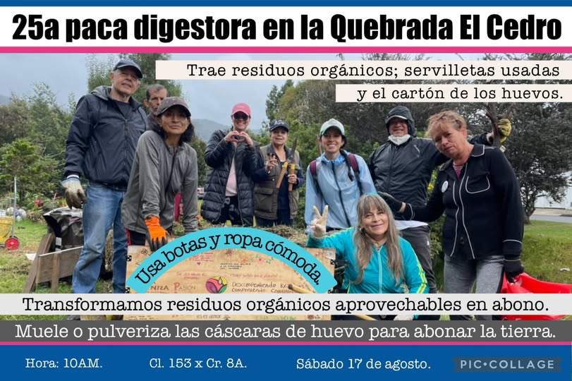
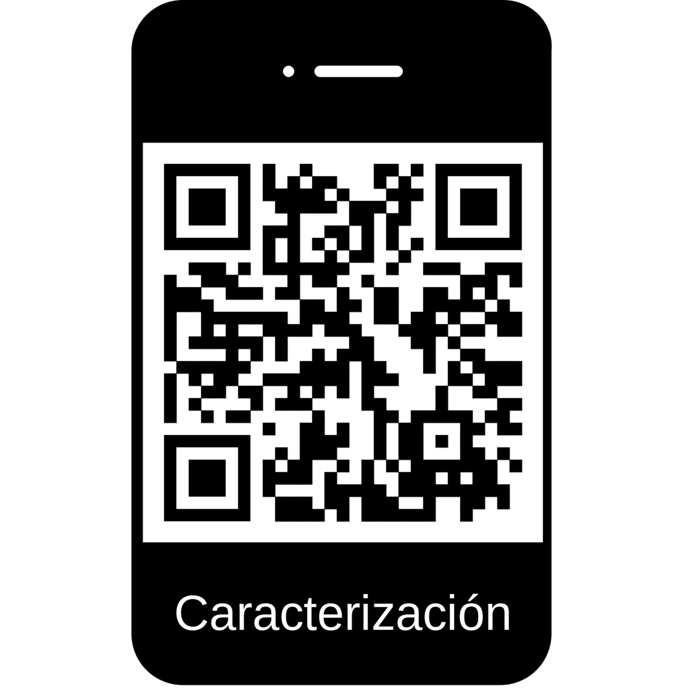
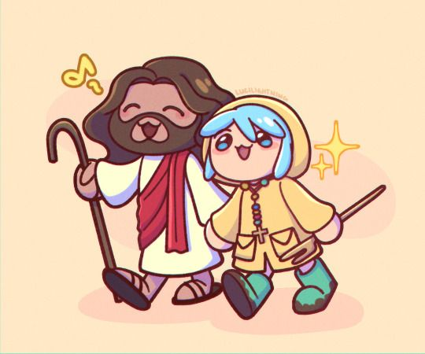

Servicios de la comunidad/parroquia

Grupo Juvenil
Paqueros de la Quebrada El Cedro transforman 3,4 ton. de residuos aprovechables en compost para sus plantas.

¡Nos interesa conocer a nuestra comunidad!
Escanea el codigo QR y participa en la caracterización de los miembros del barrio Cedro Golf con el fin de fortalecer nuestra comunicacion y unión en beneficio de una mejor sociedad.
